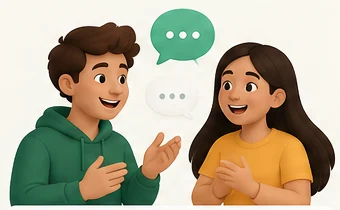

Tell me what happened
You are the storyteller. Your partner will ask questions.

Practice a sound, use it in a real message,
then carry it into conversation.
You are the storyteller. Your partner will ask questions.
Tap the microphone to start recording.
Audio stays on this device during standalone testing.
Record and review a take before sending it to Oral-Grader.
Transcript pending — submit the accepted take with Califica.
Waiting for Oral-Grader.
Awaiting Oral-Grader
Awaiting Oral-Grader
Ready